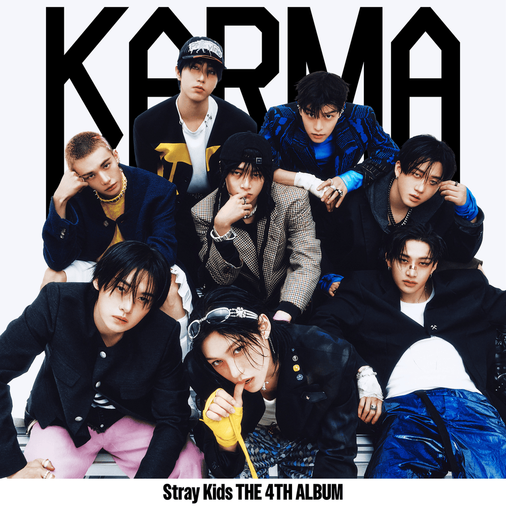

LYRIC ANALYSIS FILE
CREED
Stray Kids
- ALBUM
- KARMA
- RELEASE
- 2025.08.26
- UPDATED
- 2026.08.28
- LANGUAGE
- KOREAN / ENGLISH
- LYRICS
- 3RACHA
- COMPOSED
- 3RACHA,Millionboy
02 / MEMBER IDENTIFICATION
Part Colors
03 / LYRIC DATABASE
Lyrics
スカー
Skrr
Skrr
アイ ギヴ ライフ トゥ マイ ワーズ
I give life to my words
自分の言葉に命を吹き込む
（イェー アイム ドゥーイング ワット アイ セイ）
(Yeah, I'm doing what I say)
（そう、言ったことをそのまま実行する）
アイ リーチ ハイツ フロム ザ ダート
I reach heights from the dirt
泥の底から高みへ到達する
（イェー アイム ドゥーイング ワット アイ セイ）
(Yeah, I'm doing what I say)
（そう、言ったことをそのまま実行する）
ユー ノウ アイ バイト ザ ウェイ アイ バーク
You know I bite the way I bark
吠えるだけじゃなく、その言葉どおりに噛みつく
（イェー アイム ドゥーイング ワット アイ セイ）
(Yeah, I'm doing what I say)
（そう、言ったことをそのまま実行する）
ドゥーイング ワット アイ セイ、ドゥーイング ワット アイ セイ
Doing what I say, doing what I say
言ったことをやる、言ったことをそのまま実行する
イッツ ソー イージー トゥ メイク アス ベター、ウィ ガット ザ ライト タイミング
It's so easy to make us better, we got the right timing
俺たちをもっと良くするなんて簡単だ、タイミングも完璧
たん いるちょえ なんびど おぷち タイム イズ ダイアモンズ
단 일초의 낭비도 없지 time is diamonds
たった一秒も無駄にしない、時間はダイヤモンド
ディス スラップス、うりぬん ふるむる ちっかめ たご おるらがじ、プレイン
This slaps, 우리는 흐름을 직감해 타고 올라가지, plane
これは最高だ、俺たちは流れを直感して乗りこなし、飛行機のように上昇する
ノー アーギュメンツ、（っとぅ っとぅ っとぅ）とぅばかん うまぐろ へじょっち プルーヴド イット、アイ セッド
No arguments, (뚜뚜뚜) 투박한 음악으로 해줬지 proved it, I said
異論はない、荒削りな音楽でやってみせた、証明しただろ
ワン デイ、ウィル ビカム ザ ワンズ ザット ゼイ ワナ ビー ライク
One day, we'll become the ones that they wanna be like
いつか俺たちは、誰もが憧れる存在になる
ブリング イット バック、もどぅが ほんじょれ ちゃじ きが ひゅでぽんちょろむ、イェー
Bring it back, 모두가 혼절해 차지 기가 휴대폰처럼, yeah
取り戻せ、みんなが気絶するほどエネルギーを携帯電話みたいに充電する
はんぼん と へ とぅんばぬる かじょわ うじゅそん ぴへんぎ あん まじゃ いじぇん
한번 더 해 등반을 가져와 우주선 비행기 안 맞아 이젠
もう一度登り続ける、今の俺たちには飛行機じゃ足りない、宇宙船を持ってこい
ちょぎな へ、くぇんちゃぬん どぅてぼぁっちゃ もどぅ てぃえそん ったみな っぺ
척이나 해, 괜찮은 듯 해봤자 모두 뒤에선 땀이나 빼
格好だけつけて平気なふりをしても、みんな裏では汗を流している
オー ロード、ウィア フォローイング アワ クリード トゥ メイク アス リット、ハ
Oh, lord, we're following our creed to make us lit, huh
神よ、俺たちは自分たちを輝かせるため信念に従う
アイ エイント トリッピン、もぷする ちゃんえむれん パルクール、スライド、ジャンプ
I ain't trippin', 몹쓸 장애물엔 parkour, slide, jump
動揺なんてしない、忌々しい障害物ならパルクールで滑って飛び越える
クリア ユア マインド、い きせるる もら レヴィテイト
Clear your mind, 이 기세를 몰아 levitate
雑念を捨て、この勢いに乗って浮かび上がれ
ちょるて かじ あな っぱるん きる、コーズ ウィ メイク アワ オウン ロード、ハ
절대 가지 않아 빠른 길, 'cause we make our own road, huh
決して近道は選ばない、自分たちの道は自分たちで作るから
ウィア オールウェイズ ザ セイム、ノー チェンジ、かとぅん せんがぎ よくし、ハ
We're always the same, no change, 같은 생각이 역시, huh
俺たちはいつだって変わらない、やっぱり考えることも同じ
しぷこ っぱるん ごん あくまが まんどぅん ひゃんぎろうん っこっ
쉽고 빠른 건 악마가 만든 향기로운 꽃
簡単で速いものは、悪魔が作った香り高い花
はどん でろ はじ みんぬん くでろ ちくちん
하던 대로 하지 믿는 그대로 직진
今までどおり、信じるまま真っすぐ進む
ウィ ジャスト（フー、フー、フー、フー）ちぇご そんにょく スピード アップ
We just (Hoo, hoo, hoo, hoo) 최고 속력 speed up
俺たちはただ最高速度まで加速する
アイ ギヴ ライフ トゥ マイ ワーズ
I give life to my words
自分の言葉に命を吹き込む
（イェー アイム ドゥーイング ワット アイ セイ）
(Yeah, I'm doing what I say)
（そう、言ったことをそのまま実行する）
アイ リーチ ハイツ フロム ザ ダート
I reach heights from the dirt
泥の底から高みへ到達する
（イェー アイム ドゥーイング ワット アイ セイ）
(Yeah, I'm doing what I say)
（そう、言ったことをそのまま実行する）
ユー ノウ アイ バイト ザ ウェイ アイ バーク
You know I bite the way I bark
吠えるだけじゃなく、その言葉どおりに噛みつく
（イェー アイム ドゥーイング ワット アイ セイ）
(Yeah, I'm doing what I say)
（そう、言ったことをそのまま実行する）
マイ クリード ウィル ネヴァー フォール アパート
My creed will never fall apart
俺の信念は決して崩れない
（イェー アイム ドゥーイング ワット アイ セイ）
(Yeah, I'm doing what I say)
（そう、言ったことをそのまま実行する）
アイ ギヴ ライフ トゥ マイ ワーズ
I give life to my words
自分の言葉に命を吹き込む
（イェー アイム ドゥーイング ワット アイ セイ）
(Yeah, I'm doing what I say)
（そう、言ったことをそのまま実行する）
アイ リーチ ハイツ フロム ザ ダート
I reach heights from the dirt
泥の底から高みへ到達する
（イェー アイム ドゥーイング ワット アイ セイ）
(Yeah, I'm doing what I say)
（そう、言ったことをそのまま実行する）
ユー ノウ アイ バイト ザ ウェイ アイ バーク
You know I bite the way I bark
吠えるだけじゃなく、その言葉どおりに噛みつく
（イェー アイム ドゥーイング ワット アイ セイ）
(Yeah, I'm doing what I say)
（そう、言ったことをそのまま実行する）
ドゥーイング ワット アイ セイ、ドゥーイング ワット アイ セイ
Doing what I say, doing what I say
言ったことをやる、言ったことをそのまま実行する
こじし とぅろな もどぅん ちょく、いんぬん くでろ ぼよじぬん こっ
거짓이 드러나 모든 척, 있는 그대로 보여지는 컷
あらゆる偽りが露わになり、ありのままが映し出されるカット
すすろ ぱぼりる むどむぐぁ とっ、っぽなん ちぇみわ ちゃぐっぽだん ちんじょんそん
스스로 파버릴 무덤과 덫, 뻔한 재미와 자극보단 진정성
自分で掘ってしまう墓と罠、ありきたりな面白さや刺激よりも本物らしさ
ちょぐん でろ ぼよじゅぬん ごっ、ねべとぅん でろ ぼよじゅぬん ごっ
적은 대로 보여주는 것, 내뱉은 대로 보여주는 것
書いたとおりに見せること、口にしたとおりに見せること
ほぷん っとるどぅっ ほせ かどぅく とぅるん ほじゅもにぬん っちっきん じ おれじょん
허풍 떨듯 허세 가득 들은 호주머니는 찢긴 지 오래전
大ぼらを吹くように虚勢でいっぱいだったポケットは、とっくの昔に破れている
もしん のみ とぇぎ うぃへ みちん どぅし かりじ あんこ っとぅいおどぅろっそ
멋진 놈이 되기 위해 미친 듯이 가리지 않고 뛰어들었어
格好いい奴になるため、狂ったように何も選ばず飛び込んだ
ひょんしれ びょぎ のぷた はんどぅる ね ぽぶぬん むるぷ はんぼん あん っくろっそ
현실의 벽이 높다 한들 내 포부는 무릎 한번 안 꿇었어
現実の壁がどれほど高くても、俺の抱負は一度も膝をつかなかった
すおぷし っそ ねりょがる おぷちょくどぅれ いんく めまる いる おむぬん ぺんちょく
수없이 써 내려갈 업적들에 잉크 메마를 일 없는 펜촉
数え切れないほど書き記す業績、インクが乾くことのないペン先
ちょぐぱる ぴりょ おむぬん マイ ペース、おぬるど なるる と じぇちょく
조급할 필요 없는 my pace, 오늘도 나를 더 재촉
焦る必要のない自分のペース、それでも今日も自分をさらに駆り立てる
アイ キープ マイ クリード イン マイ ハート
I keep my creed in my heart
自分の信念を胸に抱いている
コーズ ホールディング オン トゥ イット ウォント ワーク アット オール、イェー
'Cause holding on to it won't work at all, yeah
ただしがみついているだけじゃ、何も上手くいかない
アイル メイク シュア アイ ゲット ワット アイ ウォント
I'll make sure I get what I want
欲しいものは必ず手に入れる
マイ クリード、イット キープス ミー ブリージング、ア、ア、イェー
My creed, it keeps me breathing, uh, uh, yeah
俺の信念が、俺を生かし続けている
アイ ギヴ ライフ トゥ マイ ワーズ
I give life to my words
自分の言葉に命を吹き込む
（イェー アイム ドゥーイング ワット アイ セイ）
(Yeah, I'm doing what I say)
（そう、言ったことをそのまま実行する）
アイ リーチ ハイツ フロム ザ ダート
I reach heights from the dirt
泥の底から高みへ到達する
（イェー アイム ドゥーイング ワット アイ セイ）
(Yeah, I'm doing what I say)
（そう、言ったことをそのまま実行する）
ユー ノウ アイ バイト ザ ウェイ アイ バーク
You know I bite the way I bark
吠えるだけじゃなく、その言葉どおりに噛みつく
（イェー アイム ドゥーイング ワット アイ セイ）
(Yeah, I'm doing what I say)
（そう、言ったことをそのまま実行する）
マイ クリード ウィル ネヴァー フォール アパート
My creed will never fall apart
俺の信念は決して崩れない
（イェー アイム ドゥーイング ワット アイ セイ）
(Yeah, I'm doing what I say)
（そう、言ったことをそのまま実行する）
アイ ギヴ ライフ トゥ マイ ワーズ
I give life to my words
自分の言葉に命を吹き込む
（イェー アイム ドゥーイング ワット アイ セイ）
(Yeah, I'm doing what I say)
（そう、言ったことをそのまま実行する）
アイ リーチ ハイツ フロム ザ ダート
I reach heights from the dirt
泥の底から高みへ到達する
（イェー アイム ドゥーイング ワット アイ セイ）
(Yeah, I'm doing what I say)
（そう、言ったことをそのまま実行する）
ユー ノウ アイ バイト ザ ウェイ アイ バーク
You know I bite the way I bark
吠えるだけじゃなく、その言葉どおりに噛みつく
（イェー アイム ドゥーイング ワット アイ セイ）
(Yeah, I'm doing what I say)
（そう、言ったことをそのまま実行する）
ドゥーイング ワット アイ セイ、ドゥーイング ワット アイ セイ
Doing what I say, doing what I say
言ったことをやる、言ったことをそのまま実行する